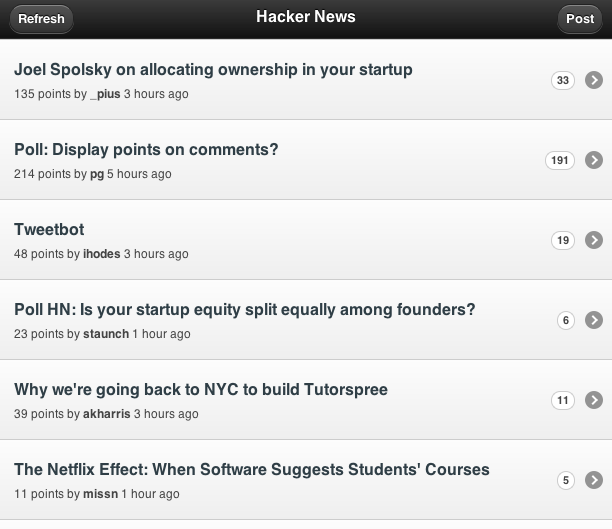

jQuery mobile hacker news
I'm about to embark on a 3-week heads-down coding spree to finish off the final project of my masters. I convinced my team and our clients that it's a good idea to use jQuery Mobile instead of native Android to implement our data-centric application, so I've been playing with it quite a bit over the last week. jQM is still in Alpha 2, so to get my feet wet, I decided to write a demo app before starting the final project. After stumbling over a few kinks and rough edges, a weekend of coding yielded a mobile Hacker News client.

Loading JavaScript
jQuery Mobile is firmly rooted in the progressive enhancement philosophy
of web application development. In practice, this means that the simple
markup that you write in it is processed by the framework's JavaScript
and transformed into much more complex and JS-enhanced markup. In
particular, jQM rewrites <a href="page.html"></a> into an element that
loads the contents of the page via an AJAX request. Unfortunately, CSS
and JavaScript referenced by page.html is not loaded.
To work around this, I've been using a makeshift JS loader which latches on to the jQM pageshow event so that whenever an HTML page loads, the corresponding JavaScript file also loads. To prevent the JS loader from loading already-loaded JavaScript whenever a page is reloaded, it employs a cache. Still, the JS needs to be triggered when the page is loaded, so there's a way to bind a page load to a function. Here's some sample usage of the ScriptCache:
// Create a new ScriptCache in the global scope
var scriptCache = new ScriptCache();
// Now when page.html loads, page.js will load
// Also, each page can register with the scriptCache
scriptCache.onPageLoad('page.html', pageInitFunction);
// Each page.js looks like this:
(function() {
var init = function() {...};
// Whenever this page is loaded, call init
scriptCache.onPageLoad('page.html', init);
// Call init the first time it's loaded too
init();
})();
This approach was inspired by a discussion on the jQuery Forum, and I really hope that there will be a better answer from readers or the jQM developers. The ScriptCache loader is on github.
Passing Parameters
Another issue I came across was parameter passing between pages. The jQM
Hacker News client needs to pass item IDs from the main page listing to
item pages. Unfortunately jQuery Mobile seems to have no provision for
doing this. A couple approaches come to mind. One way is through a
global variable parameter passing convention (possible since jQuery
pages aren't navigated to, but loaded with AJAX). The way I'm using is
through GET parameters after the hash. Thus the URL to an item page
looks like this: http://example.com/index.html#item.html?id=82831.
However, the pageshow event fires just slightly before the
window.location is updated with the requested URL. I'm currently working
around this with a setTimeout, but this is clearly unacceptable. This
issue is being discussed on github.
There's also an issue passing parameters via the jQM changePage call:
$.mobile.changePage('page.html?key=value');. The parameters are simply
ignored. Thus I was forced to use window.location.href +=
'#page.html?key=value';, which only works if your window.location.href
is the main application page.
Hacker News
Using the workarounds outlined above, I wrote an application that lets you read and post to Hacker News, a startup-oriented online community run by Y Combinator. It uses the third party HN API provided by @ronnieroller, who has been very responsive on twitter (thanks!). For fetching posts and comments, the application relies on the JSONP methods of this API. It doesn't currently permit authenticated posting and voting on HN.
For commenting and submitting links, I embed actual Hacker News post pages in an iframe, working around the lack of support and avoiding trust issues. Unfortunately the Android browser has a bug which forces iframes to resize to the width of their contained textarea if one exists in the embedded page. This causes the width of the page to grow which forces jQuery Mobile to relayout. The reference implementation (iOS) does not suffer from this issue.
I'd be glad to get your feedback on this app. If you want to read the code or fork the project, it's available on github.
I've packed this application with PhoneGap, and currently use it as the HN reader on my phone. Existing HN applications on Android don't provide share intent handlers (to share from the browser or your RSS reader). This app provides share intent handling through WebIntents, an Android PhoneGap plugin that I've been working on. More on that next post, so stay tuned!